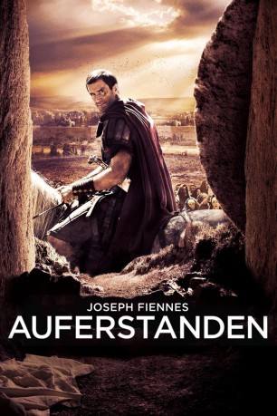

gesehen am 27.07.2016
gesehen am 27.07.2016Alternativ: Risen gesehen am 27.07.2016
 
 IMDB-Wertung: 6.3 / 10
IMDB-Wertung: 6.3 / 10  Metascore:
Metascore: 
Obwohl die römischen Machthaber hofften, mit der Hinrichtung von Jesus die Aufstände der jüdischen Bevölkerung in Jerusalem im Keim zu ersticken, hatte die Tat eher den gegenteiligen Effekt. Um die aufbegehrenden Bürger, die sich auf Jesus berufen, endlich zum Verstummen zu bringen, und den Mythos um die Göttlichkeit des Messias zu entkräften, bekommt der Militärtribun Clavius (Joseph Fiennes) den Auftrag, die Wahrheit über Jesus‘ Tod und seine vermeintliche Auferstehung aufzudecken. Mit seinem Gehilfen Lucius (Tom Felton) macht sich Clavius auf die Suche nach der verschwundenen Leiche und setzt dabei die Puzzleteile zur Aufklärung des mysteriösen Falls nach und nach zusammen. Je tiefer Clavius in seine Nachforschungen abtaucht, desto mehr stellt er indes auch seinen eigenen Glauben infrage.
Jahr: 2016
Dauer: 107 Minuten
FSK: 12
Land: USA Studio: Columbia PicturesTonspuren: DD5.1 - ,
Untertitel: Deutsch, Englisch,
Auflösung: 1080p (1920x800) Größe: 9246 MB
Genre: Action, Drama, Abenteuer, Mystery, Weihnachten
Regisseur:  Kevin Reynolds
Kevin Reynolds
Drehbuch: Ron Osborn
Soundtrack:
Darsteller:
 Joseph Fiennes als Clavius
Joseph Fiennes als Clavius Tom Felton als Lucius
Tom Felton als Lucius Peter Firth als Pilate
Peter Firth als Pilate Cliff Curtis als Yeshua
Cliff Curtis als Yeshua Luis Callejo als Joses
Luis Callejo als Joses Stewart Scudamore als Peter
Stewart Scudamore als Peter Andy Gathergood als Quintus
Andy Gathergood als Quintus Jan Cornet als Thomas / Dydimus
Jan Cornet als Thomas / Dydimus Selva Rasalingam als James
Selva Rasalingam als James Stephen Greif als Caiaphas
Stephen Greif als Caiaphas Karim Saleh als Zealot Leader
Karim Saleh als Zealot Leader Mario de la Rosa als Thief #1
Mario de la Rosa als Thief #1 Cuco Usín als Thief #2
Cuco Usín als Thief #2 Mark Killeen als Antonius
Mark Killeen als Antonius Mario Opinato als Labourer , uncredited
Mario Opinato als Labourer , uncredited Malcolm Ellul als Rachel's Lover , uncredited
Malcolm Ellul als Rachel's Lover , uncreditedDatei: X:\2016(A-F)\Auferstanden (2016, FSK12, 1920x800).mkv seit 13.07.2016
Festplatte: HD 2016(A-Z)
 Es gibt insgesamt 147 Filme in der Gruppe '2016(A-F)'
Es gibt insgesamt 147 Filme in der Gruppe '2016(A-F)'